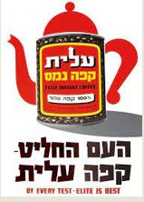
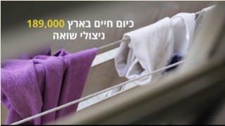
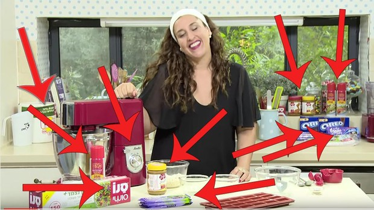

פרסום ופרסום סמוי
מסרים גלויים ונסתרים
מושגי מפתח מהאגרון (גע במושג לפירוש)
פרסום
פרסום מסחרי
פרסום חברתי
פרסום סמוי
תוכן שיווקי
הגדרה
מהו פרסום?
העברת מסרים באמצעות תקשורת שכנועית כדי להשיג מטרות שיווקיות.
ארגון או גוף מסוים (המפרסם) משתמש במשרד פרסום או אמצעים פרסומיים כדי להגיע לקהל.
סוגים
סוגי פרסום מרכזיים
1. פרסום מסחרי: לגרום לרכישת מוצר או שירות.

2. פרסום חברתי: לקדם רעיון או מטרה חברתית (מאבק בתאונות דרכים, עידוד חיסונים).

3. פרסום פוליטי: קידום אדם או מפלגה לקראת בחירות.
המלכודת
פרסום סמוי (תוכן שיווקי)
הגדרה: החדרה של מותגים לתוך התוכן המערכתי.
מכניסים מותגים ומוצרים מסחריים כחלק מהתוכן התקשורתי מבלי לסמן אותו כפרסומת, ומבלי ליידע את הקהל שהמפרסם שילם כסף.
איך זה נראה?
- הנחת מוצר (בקבוק משקה) לצד הדוברים.
- הזכרת מותג "בדרך אגב".
- סיקור מותג בתוכניות בוקר/נדל"ן/אינטרנט.
- עיצוב אולפן בצבעי המותג.


הסכנה
למה זה בעייתי?
הסכנה המרכזית: הקהל לא יכול להבחין מה נאמר לו משיקולים תקשורתיים-מערכתיים (לטובת הציבור) ומה מועבר לו משיקולים מסחריים (לטובת המפרסם).
מגמה: בשנים האחרונות יש עלייה בשימוש בפרסום סמוי, כי הקהל למד "לדלג" על פרסומות רגילות.